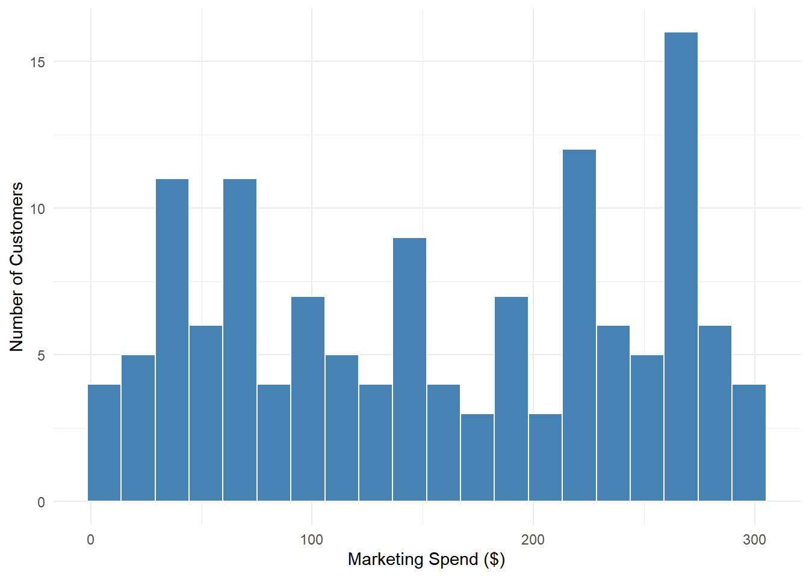
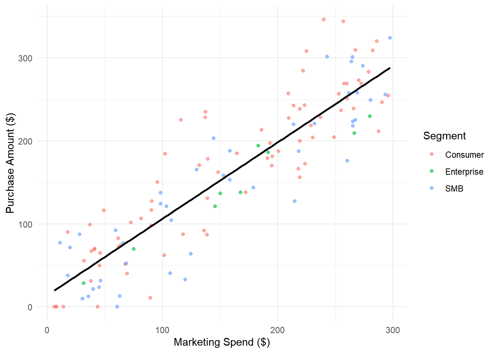
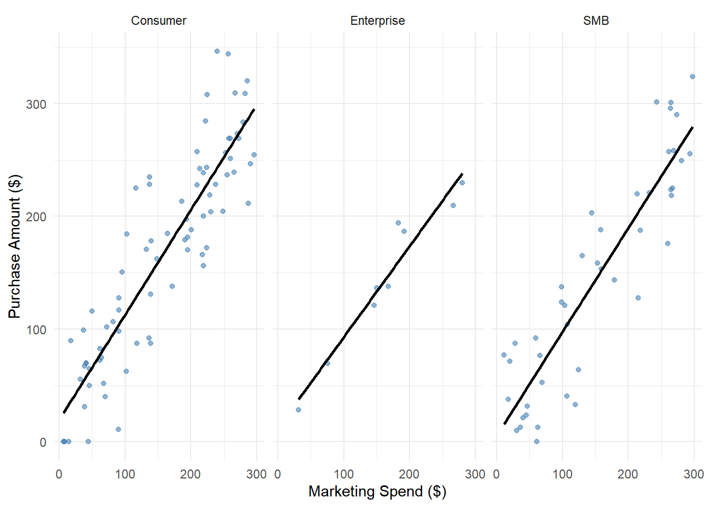

| Variable | Mean | Min | Max |
|---|---|---|---|
| Marketing Spend (\() | 155.41| 6.05| 297.45| |Visits | 5.78| 0.00| 16.00| |Purchase Amount (\)) | 157.33 | 0.00 | 346.05 |
Did Higher Marketing Spend Lead to Higher Purchase Amounts?
Introduction
Online retailers use personalised marketing campaigns to encourage customers to spend more. In this campaign, different amounts were spent on individual customers through ads, emails, and coupons. Understanding whether spending more on a customer leads to higher purchases is important for making smart budgeting decisions. This report investigates that relationship using data from one quarter of this campaign.
Research Question
Did higher marketing spend per customer lead to higher purchase amounts? This report looks at whether there is a positive relationship between the amount spent marketing to a customer and how much that customer purchased. Answering this question will help decide whether the current strategy of varied spend is working.
Dataset Introduction
The dataset records information from a personalised marketing campaign run over one quarter. Each row represents one customer and includes how much was spent marketing to them, how many times they visited the website, and how much they purchased. Customers are also grouped into three segments: Consumer, SMB, and Enterprise.
The raw data had 150 observations and 7 variables. Two cleaning steps were applied. First, 18 rows where purchase_amount was missing were removed, as purchase amount is the key variable being studied. Second, the notes column was dropped because it was empty for more than half the customers and was not relevant to the research question. The final cleaned dataset has 132 observations.
Dataset Description
The cleaned dataset contains 132 observations and 6 variables. The main numeric variables are marketing_spend (dollars spent per customer), visits (number of website visits), and purchase_amount (dollars spent by the customer). The variable segment groups customers into Consumer, SMB, and Enterprise categories.
Table 1 shows that marketing spend ranges from $6.05 to $297.45, with a mean of $155.41. Purchase amount has a similar spread, ranging from $0 to $346.05.

Figure 1 shows that marketing spend is spread fairly evenly across customers, ranging from just under $4 to just under $300.
Results


Figure 2 shows a clear positive relationship between marketing spend and purchase amount. The trend line slopes upward, meaning customers who received higher marketing spend tended to purchase more. The correlation between the two variables is 0.9, which indicates a moderately strong positive relationship. Customers in the lowest 25% of marketing spend had a mean purchase amount of $47.79, compared to $263.83 for customers in the highest 25%.
Figure 3 shows that this positive trend holds across all three customer segments. Consumer and SMB customers show a similar upward pattern, while Enterprise customers show a slightly steeper trend, though there are fewer Enterprise customers in the data. Overall, the results suggest that higher marketing spend was associated with higher purchase amounts during this campaign.